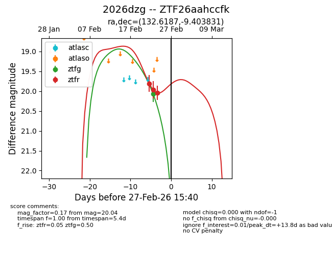
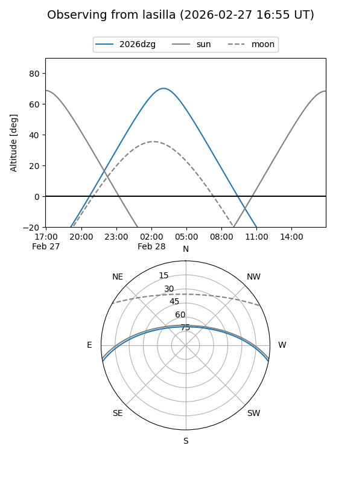
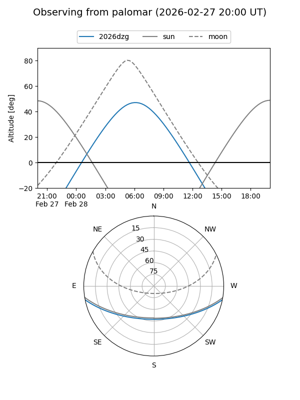
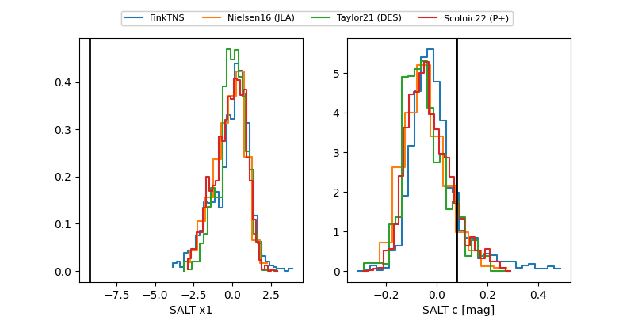

2026dzg
Target 2026dzg at 2026-02-27 15:43
Aliases and brokers:
FINK: link
Lasair: link
ALeRCE: link
TNS: link
YSE: link
alt names
ZTF26aahccfk (ztf,fink_ztf)
2026dzg (tns,yse)
Coordinates:
equatorial (ra, dec) = 132.6187,-9.40383
equatorial (HMS+DMS) = 08:50:28.48,-09:24:13.79
galactic (l, b) = (236.2240,+21.18068)
Flags:
Photometry:
last ztfg=20.07, ztfr=20.04
1 ztfg, 3 ztfr detections
Lightcurve

Visibility


Additional plots
